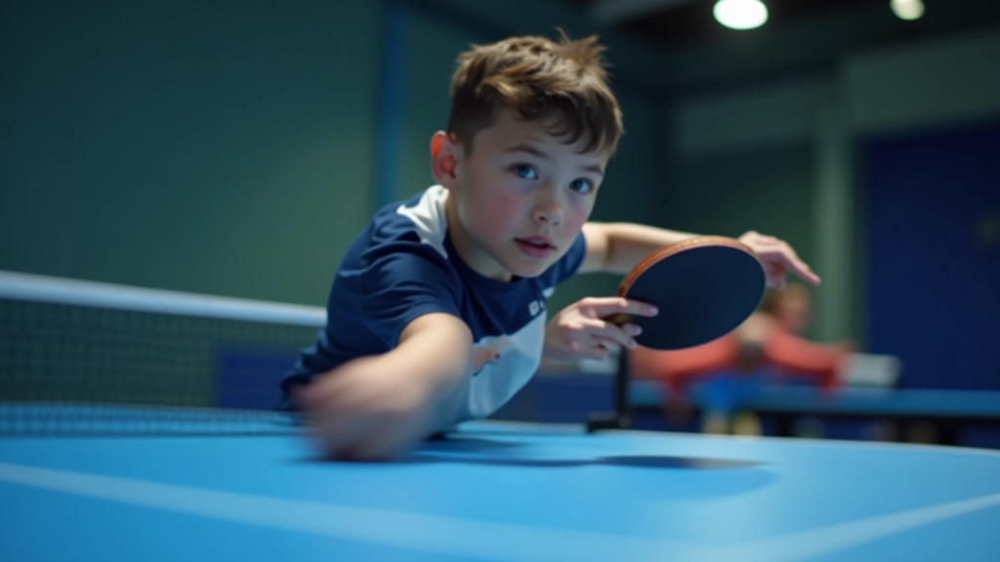
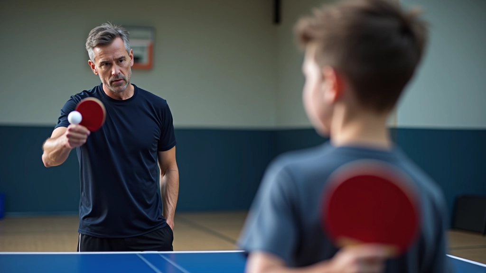
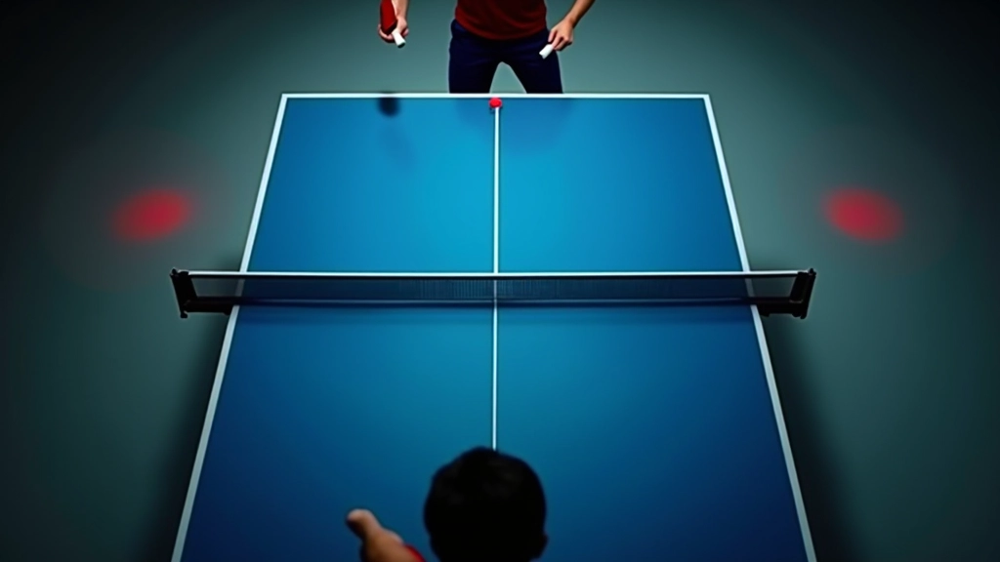
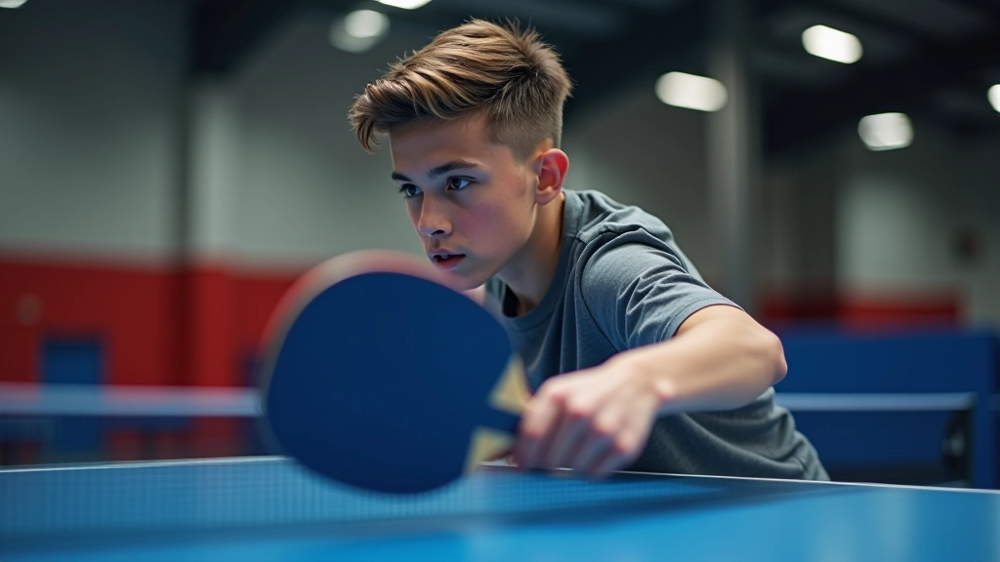
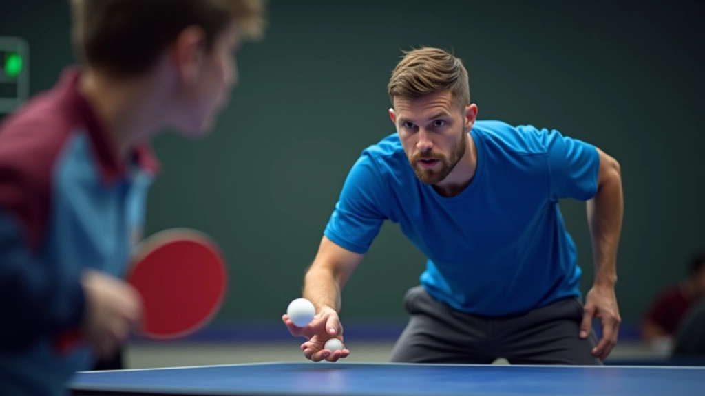
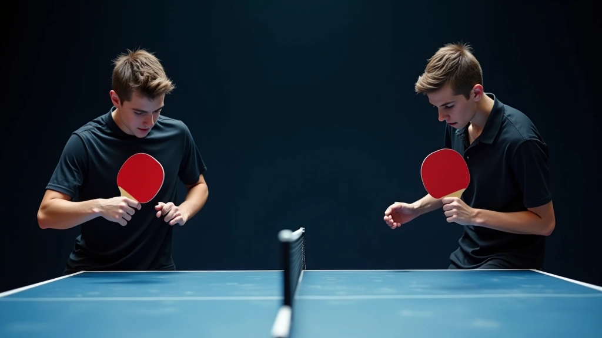
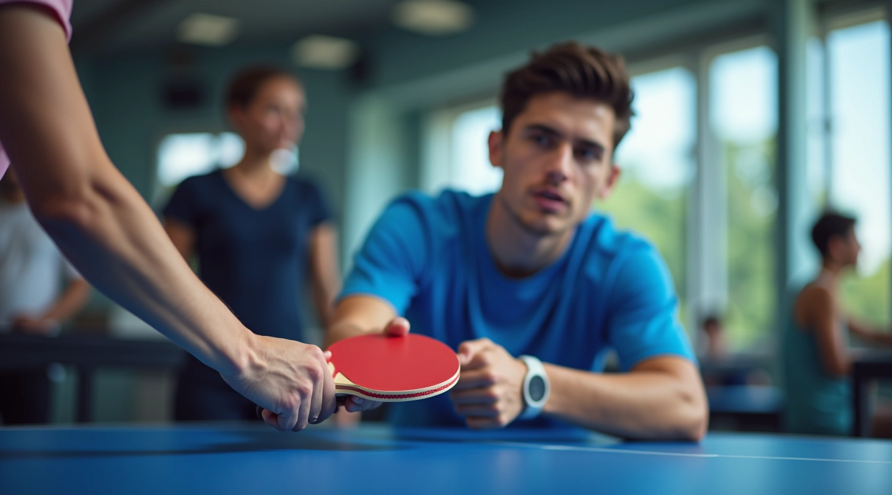
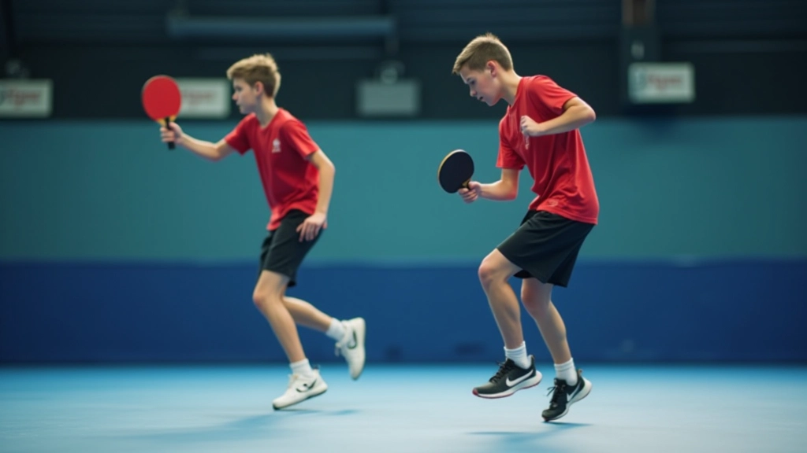
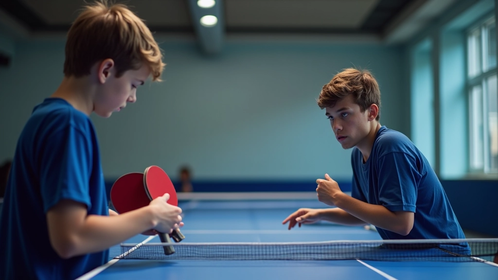

تطوير الضربات الأمامية والخلفية
الضربات الأمامية والخلفية هما أساس لعبة تنس الطاولة. في هذا الدليل، نشرح كيفية إتقان هذه المهارات الأساسية من خلال تقنيات صحيحة وتمارين فعّالة. ستتعلم الحركات الصحيحة، وكيفية توليد القوة، وكيفية تحسين دقتك على الطاولة.

لماذا تبدأ بالضربات الأساسية؟
الكثير من اللاعبين الناشئين يريدون تعلم الضربات المتقدمة بسرعة. لكن الحقيقة أن الضربات الأمامية والخلفية القوية هي أساس كل شيء. إذا كانت أساسياتك صحيحة، كل شيء آخر يصبح أسهل.
الحركة الصحيحة توفر ثلاثة أشياء: قوة أكثر، دقة أفضل، وإصابات أقل. عندما تبدأ بالطريقة الصحيحة، لا تضطر لإعادة تعلم العادات السيئة لاحقاً. هذا يوفر الوقت والإحباط.

الضربة الأمامية: خطوة بخطوة
الضربة الأمامية تبدأ من القدمين، وليس من الذراع. كثير من المبتدئين يعتقدون أنهم يحتاجون لذراع قوية فقط. لكن القوة الحقيقية تأتي من الدوران والتوازن.
خطوات الضربة الأمامية
- قف بزاوية 45 درجة من الطاولة، قدماك بعرض الأكتاف
- أحضر المضرب للخلف، مع دوران الجسم من الخصر
- أرجح المضرب للأمام وللأعلى بحركة سلسة
- اضرب الكرة عندما تكون في أعلى نقطة ارتفاع
- أكمل الحركة بعد الضربة بدون توقف
التوقيت مهم جداً. كثير من اللاعبين يضربون الكرة متأخراً جداً أو مبكراً جداً. التدريب يساعدك على إيجاد النقطة الصحيحة. عادة، تحتاج حوالي 3-4 أسابيع من التمارين المنتظمة لتشعر بالارتياح.

الضربة الخلفية: التقنية الأساسية
الضربة الخلفية أصعب قليلاً من الأمامية للمبتدئين. السبب أنها تتطلب أكثر مرونة وتوازناً. لكن مع الممارسة المنتظمة، يمكن لأي شخص إتقانها.
هناك طريقتان رئيسيتان للضربة الخلفية: بوجهين (بكلتا يديك) أو بوجه واحد. معظم اللاعبين الناشئين يبدأون بالوجهين لأنها توفر توازناً أفضل وأكثر استقراراً. ولا تقلق، حتى لو كنت تستخدم يداً واحدة فقط.
خطوات الضربة الخلفية (بوجهين)
- قف مواجهاً للطاولة بشكل مباشر، قدماك بعرض الأكتاف
- أحضر المضرب للأمام من جسدك، مع دوران طفيف من الخصر
- أرجح المضرب للخلف وللأعلى بحركة منخفضة
- اضرب الكرة وأنت تدور بظهرك نحو الشبكة قليلاً
- أنهِ الحركة بالمضرب بعيداً عن جسدك

تمارين لتحسين الدقة والقوة
الممارسة المنتظمة هي المفتاح. لا توجد اختصارات. لكن التمارين الذكية توفر الوقت والنتائج. إليك ثلاثة تمارين أساسية تعمل بفعالية:
تمرين الخط المستقيم
اضرب الكرة بحيث تهبط في نفس الخط المستقيم على الجانب الآخر. ركز على الدقة أولاً، ثم أضف السرعة. جرّب 20-30 ضربة في كل جلسة. هذا التمرين يعلمك التحكم والاتساق.
تمرين الزوايا
اضرب الكرة نحو الزوايا المختلفة من الطاولة. هذا يطور حركتك وتوازنك. تحتاج إلى الحركة بسرعة لتصل للكرة في الوقت. جرّب دقيقة واحدة من هذا التمرين، ثم استرح.
تمرين الكرات المتتالية
اطلب من شريك تدريب أن يرمي كرات متتالية بسرعة. هذا يجبرك على ضرب الكرة بسرعة والحفاظ على التركيز. إنه تمرين متقدم قليلاً، لكنه يحسّن ردود فعلك بسرعة.

نصائح للممارسة الفعّالة
التمارين بدون توجيه قد لا تعطيك النتائج التي تتوقعها. إليك كيفية التأكد من أن ممارستك تحسّن مهاراتك فعلاً:
- ركز على الجودة، ليس الكمية: 100 ضربة صحيحة أفضل من 500 ضربة سيئة
- تابع تقدمك: لاحظ متى تصبح الحركات أسهل وأكثر دقة
- استرح بشكل كافٍ: العضلات تتحسن عندما تستريح، ليس فقط عندما تتدرب
- اطلب تعليقات: مدرب أو لاعب أفضل منك يمكنه أن يرى أخطاء قد لا تلاحظها
- كن صبوراً: التحسن يأتي تدريجياً. لا تتوقع أن تكون احترافياً بعد أسبوع واحد
معظم اللاعبين يرون تحسناً ملحوظاً بعد 6-8 أسابيع من التدريب المنتظم. لكن الأساسيات قد تستغرق وقتاً أطول لتصبح طبيعية تماماً. هذا طبيعي تماماً.
الأخطاء الشائعة التي يجب تجنبها
نرى نفس الأخطاء مراراً وتكراراً مع الناشئين. إذا تجنبت هذه الأخطاء من البداية، فستتقدم أسرع:
استخدام الذراع فقط
كثير من المبتدئين يحاولون توليد القوة من الذراع والمعصم فقط. النتيجة ضربات ضعيفة وإصابات محتملة. القوة الحقيقية تأتي من الدوران والوزن.
الموقف غير المستقر
إذا كانت قدماك قريبة جداً أو بعيدة جداً، ستفقد التوازن. ابقِ قدميك بعرض الأكتاف تقريباً، وكن مستعداً للحركة السريعة.
التوقيت السيء
اضرب الكرة متأخراً جداً وستذهب بعيداً عن الطاولة. اضرب مبكراً جداً والكرة ستذهب بزاوية خاطئة. الممارسة هي الطريقة الوحيدة لتعلم التوقيت الصحيح.

خلاصة القول
إتقان الضربات الأمامية والخلفية يتطلب الصبر والممارسة المنتظمة. لا توجد اختصارات سحرية. لكن إذا كنت تركز على التقنية الصحيحة وتمارس بذكاء، ستحسّن مهاراتك بشكل كبير.
تذكر أن كل لاعب متقدم بدأ كمبتدئ. الفرق أنهم استمروا في التمرين والتعلم. إذا بدأت الآن بالطريقة الصحيحة، فستوفر على نفسك الوقت والإحباط لاحقاً. وستستمتع باللعبة أكثر عندما ترى تحسنك.
خطوتك التالية
ابدأ بالأساسيات اليوم. خذ مضرب، اذهب إلى الطاولة، واتبع الخطوات التي تعلمتها. لا تقلق من الأخطاء. كل ضربة خاطئة تعلمك شيئاً جديداً. مع الممارسة المنتظمة، ستصبح هذه الحركات طبيعية تماماً.

فريق أكاديمية النجم التحريري
فريق التحرير والمراجعة
كتبها فريق أكاديمية النجم التحريري، متخصص في تقديم إرشادات عملية وسهلة الفهم حول تطوير الناشئين في تنس الطاولة.
مقالات ذات صلة

إتقان أساسيات الإمساك والوقفة
تعلم الطريقة الصحيحة لإمساك المضرب والوقفة الأساسية التي تشكل أساس كل الحركات في تنس الطاولة.

تحسين الحركة والسرعة على الطاولة
الحركة السريعة والمتوازنة ضرورية في تنس الطاولة. تعرف على التمارين التي تطور سرعتك وحركتك.

استراتيجيات اللعب والتكتيكات الأساسية
تنس الطاولة ليست فقط عن المهارات التقنية، بل أيضاً عن القراءة الذكية للخصم والتخطيط الاستراتيجي.
ملاحظة مهمة
هذا الدليل مخصص لأغراض تعليمية وإعلامية فقط. النصائح والتمارين المذكورة هنا مبنية على مبادئ عامة لتنس الطاولة. يُنصح دائماً باستشارة مدرب متخصص قبل بدء أي برنامج تدريب جديد، خاصة إذا كان لديك أي قلق بشأن إصاباتك أو صحتك البدنية. كل شخص مختلف، والنتائج قد تختلف حسب المستوى البدني والعمر والالتزام بالتمارين.